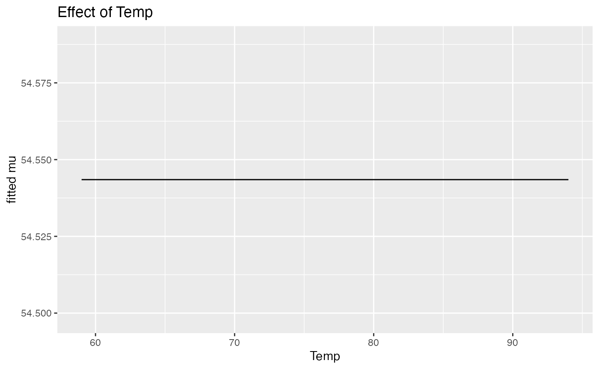
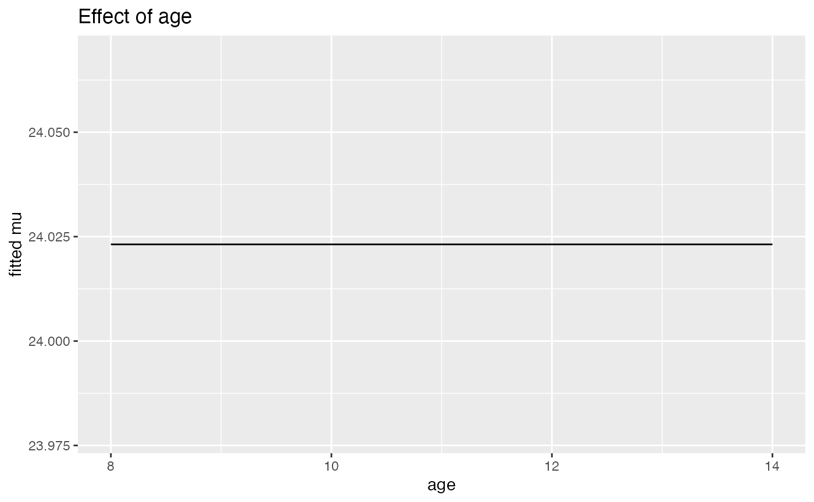

Advanced Real Data Examples: Zero-Inflation, Semicontinuous, and Longitudinal Growth
Frédéric Bertrand
Cedric, Cnam, Parisfrederic.bertrand@lecnam.net
2025-10-24
Source:vignettes/advanced-real-data-examples.Rmd
advanced-real-data-examples.RmdThis vignette demonstrates SelectBoost.gamlss on
three additional real datasets: - Zero-inflated
counts (pscl::bioChemists): ZIP / ZINB -
Semicontinuous (datasets::airquality
Ozone): ZAGA - Longitudinal growth with random effects
(nlme::Orthodont): random intercepts
Conference highlight. These examples build on the communication “An Improvement for Variable Selection for Generalized Additive Models for Location, Shape and Scale and Quantile Regression” (Frédéric Bertrand & Myriam Maumy) delivered at the Joint Statistics Meetings 2024 in Portland, emphasizing SelectBoost-driven variable selection for GAMLSS and quantile regression through resampling-intensive benchmarking.
library(SelectBoost.gamlss)
library(gamlss)
#> Loading required package: splines
#> Loading required package: gamlss.data
#>
#> Attaching package: 'gamlss.data'
#> The following object is masked from 'package:datasets':
#>
#> sleep
#> Loading required package: gamlss.dist
#> Loading required package: nlme
#> Loading required package: parallel
#> ********** GAMLSS Version 5.5-0 **********
#> For more on GAMLSS look at https://www.gamlss.com/
#> Type gamlssNews() to see new features/changes/bug fixes.Optional engines:
install.packages(c("glmnet","grpreg","SGL","future.apply"))
1. Zero-inflated counts — pscl::bioChemists
(ZIP/ZINB)
bc <- NULL
if (requireNamespace("pscl", quietly = TRUE)) {
data("bioChemists", package = "pscl")
bc <- pscl::bioChemists
needed <- c("art", "kid5", "phd", "fem", "mar", "ment")
missing_cols <- setdiff(needed, names(bc))
if (length(missing_cols)) {
cat(
"bioChemists dataset is missing columns:",
paste(missing_cols, collapse = ", "),
"— skipping ZIP example.\n"
)
bc <- NULL
} else {
keep <- stats::complete.cases(bc[, needed])
bc <- bc[keep, , drop = FALSE]
bc$fem <- factor(bc$fem)
bc$mar <- factor(bc$mar)
bc$kid5 <- factor(bc$kid5)
# ZIP engine via stepwise (mu) + grouped/elastic features
set.seed(10)
fit_zip <- sb_gamlss(
art ~ 1, data = bc, family = gamlss.dist::ZIP(),
mu_scope = ~ kid5 + fem + mar + phd + ment,
engine = "grpreg", grpreg_penalty = "grLasso",
B = 80, pi_thr = 0.6, pre_standardize = FALSE, parallel = "auto", trace = FALSE
)
sel_zip <- selection_table(fit_zip)
sel_zip <- sel_zip[order(sel_zip$parameter, -sel_zip$prop), , drop = FALSE]
head(sel_zip, n = min(8L, nrow(sel_zip)))
stable_zip <- sel_zip[sel_zip$prop >= fit_zip$pi_thr, , drop = FALSE]
if (nrow(stable_zip)) {
stable_zip
} else {
cat("No terms reached the stability threshold of", fit_zip$pi_thr, "for this run.\n")
}
}
} else {
cat("Package 'pscl' not installed; skipping bioChemists example.\n")
}
#> No terms reached the stability threshold of 0.6 for this run.The tables above report the eight most stable terms (sorted within
each parameter) together with the subset that exceeds the stability
threshold pi_thr.
ZINB often handles overdispersion better than ZIP
if (requireNamespace("pscl", quietly = TRUE) && !is.null(bc)) {
set.seed(11)
fit_zinb <- sb_gamlss(
art ~ 1, data = bc, family = gamlss.dist::ZINBI(),
mu_scope = ~ kid5 + fem + mar + phd + ment,
engine = "grpreg", grpreg_penalty = "grLasso",
B = 80, pi_thr = 0.6, pre_standardize = FALSE, parallel = "auto", trace = FALSE
)
sel_zinb <- selection_table(fit_zinb)
sel_zinb <- sel_zinb[order(sel_zinb$parameter, -sel_zinb$prop), , drop = FALSE]
head(sel_zinb, n = min(8L, nrow(sel_zinb)))
stable_zinb <- sel_zinb[sel_zinb$prop >= fit_zinb$pi_thr, , drop = FALSE]
if (nrow(stable_zinb)) {
stable_zinb
} else {
cat("No terms reached the stability threshold of", fit_zinb$pi_thr, "for this run.\n")
}
} else if (!requireNamespace("pscl", quietly = TRUE)) {
cat("Package 'pscl' not installed; skipping bioChemists example.\n")
} else {
cat("bioChemists dataset unavailable; skipping ZINBI example.\n")
}
#> No terms reached the stability threshold of 0.6 for this run.Side-by-side metrics (ZIP vs ZINB)
if (requireNamespace("pscl", quietly = TRUE)) {
if (exists("fit_zip", inherits = FALSE) && exists("fit_zinb", inherits = FALSE)) {
zip_g <- fit_zip$final_fit
zinb_g <- fit_zinb$final_fit
if (inherits(zip_g, "gamlss") && inherits(zinb_g, "gamlss")) {
safe_scalar <- function(expr) {
out <- tryCatch(expr, error = function(e) NA_real_)
if (length(out) == 0L) NA_real_ else as.numeric(out[1L])
}
met <- data.frame(
model = c("ZIP", "ZINBI"),
AIC = c(safe_scalar(AIC(zip_g)), safe_scalar(AIC(zinb_g))),
GAIC_k2 = c(safe_scalar(gamlss::GAIC(zip_g, k = 2)), safe_scalar(gamlss::GAIC(zinb_g, k = 2))),
deviance = c(safe_scalar(zip_g$deviance), safe_scalar(zinb_g$deviance))
)
if (any(!is.na(met$AIC)) || any(!is.na(met$GAIC_k2)) || any(!is.na(met$deviance))) {
print(met)
} else {
cat("Model fit statistics unavailable; skipping metric table.\n")
}
} else {
cat("Final fits not found; metrics skipped.\n")
}
} else {
cat("Models not available; run the fitting chunks first.\n")
}
} else {
cat("Package 'pscl' not installed; skipping bioChemists example.\n")
}
#> model AIC GAIC_k2 deviance
#> 1 ZIP 3362.782 3362.782 NA
#> 2 ZINBI 3225.873 3225.873 NANotes. Many art values are zero;
ZINB usually outperforms ZIP when
overdispersion is present. Group lasso treats factor levels as single
grouped terms.
2. Semicontinuous (ZAGA) — airquality::Ozone
Ozone is non-negative and has zeros; positive part is
continuous — ideal for ZAGA (zero-adjusted Gamma).
aq <- subset(airquality, !is.na(Ozone) & !is.na(Wind) & !is.na(Temp) & !is.na(Solar.R))
aq$Month <- factor(aq$Month)
set.seed(20)
fit_zaga <- sb_gamlss(
Ozone ~ 1, data = aq, family = gamlss.dist::ZAGA(),
mu_scope = ~ pb(Temp) + pb(Wind) + pb(Solar.R) + Month,
sigma_scope = ~ pb(Temp),
engine = "grpreg", grpreg_penalty = "grLasso",
B = 80, pi_thr = 0.6, pre_standardize = TRUE, parallel = "auto", trace = FALSE
)
sel_zaga <- selection_table(fit_zaga)
sel_zaga <- sel_zaga[order(sel_zaga$parameter, -sel_zaga$prop), , drop = FALSE]
head(sel_zaga, n = min(8L, nrow(sel_zaga)))
#> parameter term count prop
#> 1 mu pb(Temp) 0 0.0000
#> 2 mu pb(Wind) 0 0.0000
#> 3 mu pb(Solar.R) 0 0.0000
#> 4 mu Month 0 0.0000
#> 5 sigma pb(Temp) 71 0.8875
stable_zaga <- sel_zaga[sel_zaga$prop >= fit_zaga$pi_thr, , drop = FALSE]
if (nrow(stable_zaga)) {
stable_zaga
} else {
cat("No terms reached the stability threshold of", fit_zaga$pi_thr, "for this run.\n")
}
#> parameter term count prop
#> 5 sigma pb(Temp) 71 0.8875As with the count model, we present the eight most persistent effects plus the subset clearing the stability requirement.
Effect plot for Temp on mu (ZAGA)
if (requireNamespace('ggplot2', quietly = TRUE)) {
print(effect_plot(fit_zaga, 'Temp', aq, what = 'mu'))
}
#> Warning: `aes_string()` was deprecated in ggplot2 3.0.0.
#> ℹ Please use tidy evaluation idioms with `aes()`.
#> ℹ See also `vignette("ggplot2-in-packages")` for more information.
#> ℹ The deprecated feature was likely used in the SelectBoost.gamlss package.
#> Please report the issue at
#> <https://github.com/fbertran/SelectBoost.gamlss/issues/>.
#> This warning is displayed once every 8 hours.
#> Call `lifecycle::last_lifecycle_warnings()` to see where this warning was
#> generated.
Notes. ZAGA models a point mass at zero
plus a Gamma for the positive part. Group selection keeps whole spline
bases together.
3. Longitudinal growth with random effects —
nlme::Orthodont
Fit random intercepts by subject using
gamlss::random(), while selecting fixed effects for μ.
if (requireNamespace("nlme", quietly = TRUE)) {
data_ok <- tryCatch({
utils::data("Orthodont", package = "nlme", envir = environment())
TRUE
}, error = function(e) FALSE)
if (!data_ok || !exists("Orthodont", inherits = FALSE)) {
cat("Dataset 'Orthodont' unavailable; skipping longitudinal example.\n")
} else {
od <- get("Orthodont", inherits = FALSE)
rm(Orthodont)
od$Subject <- factor(od$Subject)
od$Sex <- factor(od$Sex)
set.seed(30)
fit_long <- sb_gamlss(
distance ~ gamlss::random(Subject), # random intercept
data = od, family = gamlss.dist::NO(),
mu_scope = ~ pb(age) + Sex + pb(age):Sex, # select fixed effects
engine = "grpreg", grpreg_penalty = "grLasso",
B = 80, pi_thr = 0.6, pre_standardize = TRUE, parallel = "auto", trace = FALSE
)
sel_long <- selection_table(fit_long)
sel_long <- sel_long[order(sel_long$parameter, -sel_long$prop), , drop = FALSE]
head(sel_long, n = min(8L, nrow(sel_long)))
stable_long <- sel_long[sel_long$prop >= fit_long$pi_thr, , drop = FALSE]
if (nrow(stable_long)) {
stable_long
} else {
cat("No terms reached the stability threshold of", fit_long$pi_thr, "for this run.\n")
}
if (requireNamespace("ggplot2", quietly = TRUE)) {
gg <- tryCatch(
effect_plot(fit_long, "age", od, what = "mu"),
error = function(e) {
message("effect_plot() skipped for random-effect example: ", conditionMessage(e))
NULL
}
)
if (!is.null(gg)) {
print(gg)
}
}
}
} else {
cat("Package 'nlme' not installed; skipping longitudinal example.\n")
}
Notes. The random(Subject) term stays
in the base formula (not in mu_scope) so it is always
included, while SelectBoost focuses on selecting the
fixed structure. Some plotting helpers (e.g.,
effect_plot()) may be skipped when random-effect
predictions are unavailable in a given setup.